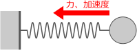
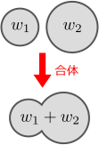
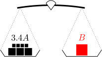
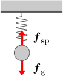
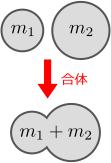
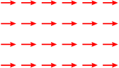
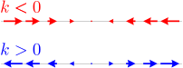

2.力から加速度を求める

この章のシミュレーション（クリックで計算開始）：
重力以外についても、運動方程式が存在しそう
力から加速度

例えば右図のように、ばねに繋がれたおもりが振動しているような状況で、おもりの運動
とはいえ、方程式の形に持っていくには、まず、「力」という感覚的な概念を定量化する必要がある。今のところ分かっている運動方程式はキャッチボールの場合
重 力 の 定 量 化 ニ ュ ー ト ン の 運 動 方 程 式 力 の 例
2.1重力の定量化
重力
力という概念は、日常的なものではあるが、それをどのように定量化すればよいかは自明ではない。とはいえ、力は、向きと大きさを持っているので、何らかのベクトルで表すことができそうである。例えば重力であれば、向きは鉛直下方向、大きさは重い物体ほど大きくなるといった具合である。力の向きは直感的に分かるだろうから、力の大きさをどのように定量化するかが問題になる。
重力
重力を定量化するためには、重力の大きさ
天 秤 で 決 め た 重 さ

なお、本章の冒頭でも触れたように、力は足し合わせ可能だと考えられるが、重さ
【2.1-注1】天秤を用いた重さの定量化
まず、2つの物体の重さの大小関係は、天秤を用いて容易に決定できる。即ち、天秤の両皿に物体を乗せた時、天秤が釣り合えば両者の重さは等しく、逆に、傾けば下がったほうの物体のほうが重い。
天秤を用いて重さを実際に量るには、まず、基準となる適当な物体

これらを使って、次のように、任意の物体
重力
重力
係数
2.2ニュートンの運動方程式：式(
一般の力

一般の力
この時、バネの伸び
このようにして定量化した力は、力の向きがそろっていない場合の釣り合いにおいてもうまくいくことが、実験的に分かっている。例えば右図のように、ある物体に、3つの力
【2.2-注1】バネ量りの原理
バネに重りを吊るした時、おもりの重さ
これを使って、物体の重さを量ることができる。これをバネ量りという。
ニュートンの運動方程式：式(
さて、もともと求めたかったのは、一般の力における運動方程式である。前節で求めた、重力における運動方程式(
では、

そこで、これに名前を付けておこう。この係数の逆数を、
質量
【2.2-注2】質量
質量
補足：ニュートンの運動方程式(
運動方程式(
なお、【2.1-注1】で述べた「天秤を用いた方法」は、重力の定義としては本当はあまりよくない。というのも、同じ物体であっても、重さは場所によって微妙に異なるからである（極端に言えば、地球と月を考えればよい）。そのため、同じ地点でのみ測定を行うのであればよいが、別の地点での重さの変化を天秤で測ることはできない。天秤は、「分銅に働く重力」と「物体に働く重力」のつり合いを考えているので、重力加速度の大きさとは無関係である。従って、物体の質量を測定していると見なすほうが適切である。一方、バネ量りは、力を直接測定している。
2.3力の例
この節では、最も単純な2つの例、即ち、「一定の力」と「
これまでの議論で、力
一定の力：解析解(

もっとも単純な例として、
運動方程式は、

数値計算を行うと右図のようになる。赤矢印が力を表している。下のものほど質量が大きくなっており、加速度を受けにくいことが分かる。

次に単純なのは、力
運動方程式は
数値計算を行うと右図のようになる。右図は
補足：
式(
なお上式では、